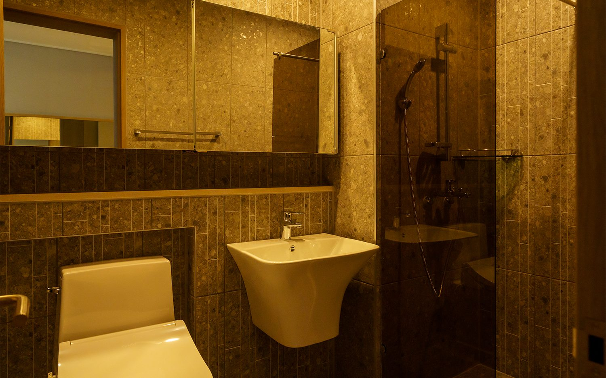
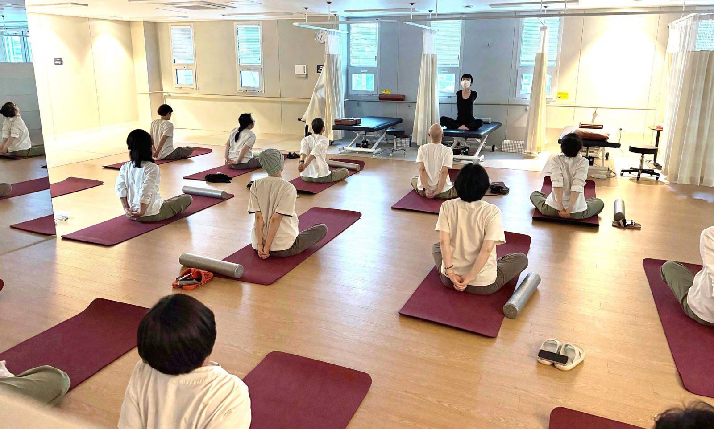

갑상선암, 두렵고 막막한 여정...
갑상선암 수술 후 회복은 입원 첫날 진료부터 퇴원 뒤 외래까지 어떻게 이어지나요?
갑상선암 수술 후 회복은 사전안내 및 평가, 입원 진료, 방사선 요오드 치료, 퇴원 뒤 단기입원·외래의 네 단계로 이어지고, 입원 첫날 이비인후과 진료로 목소리·칼슘·수술 부위를 확인합니다. 갑상선암 진단을 받으면 누구나 두렵고 막막합니다. 수술은 물론, 동위원소 치료와 이후의 회복까지 많은 걱정이 앞섭니다. 이런 모든 고민에, 하일렌요양병원 갑상선암 회복 프로그램이 함께합니다.

- 대상
- 갑상선암 수술 후 회복 · 동위원소 치료 전 저요오드식 입원 · 동위원소 치료 뒤 1인실 입원
- 이용
- 입원 · 단기입원(1박 2일부터) · 외래
- 첫날 진료
- 이비인후과 진료로 목소리(음성평가·후두내시경), 칼슘(혈액 검사), 수술 부위(초음파) 확인
- 식사
- 입원 중 식사는 주치의가 환자분 상태에 맞춰 처방하고, 치료식(일반식 · 항암식 · 위절제식 · 저잔사식 · 저염식 · 저요오드식 등) 가운데에서 고릅니다.
- 병실
- 1인실 위주
- 문의
- 원내 상담실 · 카카오톡 채널 · 062-439-1000
갑상선암 치료는 어떤 흐름으로 이어지나요
하일렌요양병원은 대학병원·암병원 일정에 맞춰 입원, 단기입원, 외래를 언제 어떻게 이어 갈지 함께 정합니다. 수술, 동위원소 치료, 갑상선호르몬제 처방과 검사 일정은 대학병원·암병원의 판단을 따릅니다.
흐름은 네 단계입니다. 상담에서는 이 흐름을 갑상선암 치료 코스라고 부릅니다.
- 사전안내 및 평가 — 첫 상담에서 수술일과 퇴원 예정일, 동위원소 치료 예정 여부를 여쭤 보고 입원일을 함께 정합니다.
- 입원 진료 — 입원 첫날 이비인후과 진료로 목소리, 칼슘, 수술 부위를 확인하고, 입원 기간 중 회복을 돕습니다.
- 방사선 요오드(동위원소) 치료 — 치료 전 저요오드식 입원, 대학병원·암병원에서 치료, 치료 뒤 1인실 입원과 합병증 평가
- 퇴원 뒤 — 단기입원과 외래로 이어 갑니다.
동위원소 치료가 없는 분은 상담, 입원 진료, 퇴원 뒤 외래로 이어집니다. 동위원소 치료가 있는 분은 입원 진료에서 갈라져 저요오드식으로 치료를 준비하고, 대학병원·암병원에서 치료를 받은 뒤 하일렌요양병원 1인실로 돌아와 회복한 다음 퇴원합니다.
사전안내 및 평가 — 첫 상담에서 여쭙는 것
수술 날짜가 정해지면 전화나 카카오톡 채널로 원내 상담실에 먼저 연락해 주세요.
수술일, 대학병원·암병원 퇴원 예정일, 동위원소 치료 예정 여부, 직장 복귀 사정을 여쭤 보고 입원일을 함께 정합니다. 병실과 기간은 이 자리에서 처음 의논합니다.
동위원소 치료 날짜가 정해지면 저요오드식 입원 날짜도 그 일정에 맞춰 함께 잡습니다.
궁금한 점이 있으시면 이때 편하게 물어봐 주세요.
입원 진료 — 입원 첫날 이비인후과 진료로 목소리, 칼슘, 수술 부위를 확인합니다
입원 첫날 이비인후과 진료로 목소리, 칼슘, 수술 부위를 확인합니다. 목소리는 음성평가와 후두내시경으로, 칼슘은 혈액 검사로, 수술 부위는 초음파로 봅니다.
- 상태 확인
- 수술 부위 초음파, 상처 관리, 부종 확인(필요하면 초음파를 보며 고인 체액을 뽑아냅니다)
- 음성평가와 후두내시경
- 부갑상선 기능(칼슘·비타민 D) 혈액 검사
- 목·어깨·가슴 통증
- 목 스트레칭 안내
갑상선 뒤쪽에는 몸속 칼슘을 조절하는 부갑상선이 있습니다. 수술 뒤 이 기능이 떨어지면 칼슘이 부족해져 손끝이 저리거나 입 주위가 얼얼할 수 있습니다. 혈액 검사로 부갑상선 기능을 평가해 칼슘과 비타민 D가 부족한지 확인하고, 부족하면 보충해 드립니다.
수술 부위는 수술받으신 병원의 지침 그대로 주사·상처관리 전담팀이 이어서 살펴 드립니다. 수술 부위 상처 회복, 흉터·통증·림프부종 관리까지 세심하게 도와 드립니다.
흉터는 퇴원 안내문에 적힌 방법대로 병동에서 이어서 관리합니다. 부풀거나 가려운 흉터는 원내 의사가 진료에서 보고 안내합니다.
입원 기간은 따로 정해져 있지 않습니다. 입원 첫날 진료에서 몸 상태를 보고 함께 정합니다. 짧게 계시다 가시는 분도, 오래 계시는 분도 있습니다.
목소리 변화가 나아지지 않고 이어질 때도 있습니다. 그럴 때는 의료진이 살펴보고, 대학병원·암병원 진료가 필요하다고 보면 안내해 드립니다.
고주파온열암치료를 받으실지와 그 시점은 주치의가 진료한 뒤 정합니다.
갑상선암 환자분들이 가장 많이 걱정하시는 부분과 하일렌요양병원의 답
수술 부위 회복 '상처 관리와 부종 관리'
"상처가 덧나면 어쩌죠? 목이 붓는 것도 불안해요"
수술 부위 상처 회복, 흉터·통증·림프부종 관리까지 세심하게 도와 드립니다. 수술 부위가 붓거나 체액이 고이면 초음파로 확인하고, 필요하면 초음파를 보며 뽑아냅니다. 부종은 암재활 림프 순환센터에서 림프부종 치료, 도수치료, 암재활 운동치료, 통증치료로 관리합니다.
수술 후 걱정
"목소리 변화, 상처, 부종이 너무 걱정돼요"
걱정이 많으실 때입니다. 목소리 변화와 상처, 부종을 함께 살피고, 회복 프로그램으로 일상으로 돌아가시는 길을 돕습니다.
부작용 관리와 회복 일과
"목소리가 변하고 너무 피곤해요"
목소리는 입원 첫날 이비인후과 진료에서 음성평가와 후두내시경으로 확인합니다. 피로, 음성 변화, 부종, 면역 저하에 맞춘 식사·운동·온열·정서 돌봄으로 몸과 마음의 회복을 돕습니다. 목소리 변화가 나아지지 않고 이어질 때는 대학병원·암병원 진료가 필요한지 의료진이 살펴 안내해 드립니다.
주사와 면역 주사제
"몸이 약해져서 걱정이에요"
몸이 약해졌다고 느끼실 때입니다. 주사·상처관리 전담팀이 면역주사와 수액으로 컨디션 회복까지 꼼꼼히 살펴 드립니다. 어떤 주사를 맞으실지는 주치의가 진료한 뒤 정합니다.
방사선 요오드(동위원소) 치료 — 저요오드식 입원과 치료 뒤 1인실 입원
하일렌요양병원은 동위원소 치료 전 준비 입원과 치료 뒤 회복 입원을 돕습니다. 치료를 받으실지와 그 시기, 준비 방법은 대학병원·암병원에서 정합니다.
- 치료 전 — 저요오드식 입원(대학병원·암병원 날짜에 맞춤)
- 치료 — 대학병원·암병원
- 치료 뒤 — 1인실 입원, 침샘·골수·신장 진료
대학병원·암병원이 정한 치료 날짜에 맞춰 저요오드식 기간에 다시 입원하시면 됩니다. 저요오드식 기간은 대학병원·암병원 안내서를 따르고, 식단은 영양컨시어지가 치료식으로 준비합니다. 약 조정도 대학병원·암병원의 안내를 따릅니다.
저요오드 식단, 1인실 위주의 병실(샤워실, 화장실, OTT TV), 침샘 관리와 회복까지 돌봐 드립니다.

치료는 대학병원·암병원에서 받습니다. 치료 뒤에는 하일렌요양병원 1인실로 돌아오시면 됩니다. 하일렌요양병원은 1인실을 다수 운영하고 있어, 동위원소 치료 후에도 1인실에서 충분히 혼자 생활하실 수 있습니다. 바깥과의 접촉을 줄이기 위해 되도록 1인실을 쓰시도록 하고 있습니다. 모든 병실을 소독하고 깨끗하게 관리합니다.
치료 뒤 입원하실 수 있는 시점은 원내 상담실에서 안내해 드립니다. 치료 뒤 지켜야 할 사항과 기간은 대학병원·암병원의 퇴원 지침서를 따르고, 하일렌요양병원이 따로 정하지 않습니다.
동위원소 치료 후 회복 돌봄
저요오드 식단, 피로, 침샘 관리까지 하일렌요양병원이 함께합니다. 구강 건조 관리와 회복까지 도와 드립니다. 치료 뒤에는 침샘, 골수, 신장에 문제가 없는지 진료에서 살핍니다.
퇴원 뒤 — 단기입원과 외래로 이어 갑니다
일상 복귀 돌봄
수술 후부터 회복까지, 계속 함께합니다.
- 단기입원(1박 2일부터), 외래, 주사를 상황에 맞게 이용하실 수 있습니다
- 동위원소 치료 후 회복까지 함께합니다
- 상담한 뒤 한 분 한 분께 맞춘 프로그램을 안내해 드립니다
- 치료가 끝난 뒤의 건강관리까지 함께합니다
퇴원하시는 날 하일렌요양병원 외래 날짜를 잡아 드리고, 수술받으신 병원의 외래 날짜도 같이 확인합니다. 수술받으신 병원 외래에서는 검사와 약을, 하일렌요양병원 외래에서는 회복 경과를 봅니다.
외래에서는 상처와 흉터, 목 운동 범위, 목소리와 삼킴, 손저림을 이어서 봅니다. 외래 이용을 권해 드립니다.
단기입원은 의료진이 필요하다고 보면 권해 드립니다. 갑상선호르몬제 복용과 검사 일정은 대학병원·암병원에서 정합니다.
외래로는 고주파온열암치료, 고압산소치료, 도수치료, 림프 관리, 고용량 비타민C, 면역 주사제, 영양공급수액을 받으실 수 있습니다.
입원 중에도 대학병원·암병원 외래는 그대로 다니실 수 있습니다. 입원 중 대학병원·암병원 외래 진료에 필요한 진료의뢰서는 원내 주치의가 써 드립니다. 대학병원·암병원에 다녀오신 뒤에는 검사 결과와 다음 일정을 병동 간호사가 적어 두고, 주치의가 원내 처방과 함께 봅니다.
※ 주치의가 진료한 뒤 정합니다.
장기 관리 걱정
"재발이 걱정되고 계속 피곤해요"
재발 걱정과 피로가 이어지면 많이 지치실 겁니다. 하일렌요양병원은 외래로 건강 상태를 이어서 살펴 드립니다. 입원 중에 다른 병원 외래 진료를 받으실 때 필요한 진료의뢰서는 원내 주치의가 써 드립니다. 갑상선호르몬제 복용과 갑상선자극호르몬(TSH) 억제 치료, 정기검진은 대학병원·암병원의 지침을 따릅니다.
회복 프로그램
림프부종·근육 회복 프로그램
암재활 운동치료와 림프부종 치료로 림프 순환, 부종, 근력 회복까지 관리합니다.
"목이 붓거나 팔·어깨가 불편해요"
부종은 암재활 림프 순환센터에서 림프부종 치료, 도수치료, 암재활 운동치료, 통증치료로 관리합니다. 어디까지 움직여도 되는지는 주치의가 몸 상태를 살피고 환자분과 이야기를 나눈 뒤 함께 정합니다.
식사 — 영양컨시어지
입원 첫날부터 식사 이야기를 나눕니다.
저요오드식은 대학병원·암병원의 안내서에 맞춰 영양컨시어지가 치료식으로 준비합니다.

영양컨시어지 제도
내 몸에 꼭 맞는 식사
"입맛 없고 위장도 안 좋아요"
입맛이 없고 속까지 불편하시면 식사가 더 힘드실 겁니다. 갑상선 기능에 맞춘 저염·저자극 식단과 소화에 부담 없는 맞춤 식사를 영양사가 준비하고, 환자분 곁에서 영양컨시어지가 식사 고민을 살핍니다. 어떤 치료식을 드실지는 주치의가 환자분 상태에 맞춰 처방합니다.
마음의 회복
명상은 김성훈 수석병원장이 직접 진행합니다.
명상, 요가, 손작업 같은 원내 프로그램은 입원하지 않으셔도 통원하며 참여하실 수 있습니다. 월별 일정은 프로그램 안내와 소식에서 알려 드립니다.
정서적 불안
"불안해서 잠도 안 오고 마음이 너무 힘들어요"
잠 못 드는 밤이 이어지면 몸도 마음도 지치십니다. 명상, 소통, 힐링 클래스, 자연 속 프로그램으로 마음의 회복을 도와 드립니다.
힐링 프로그램
회복과 마음을 채우는 힐링 프로그램

"몸도 마음도 너무 지쳐요"
몸과 마음의 회복을 함께 돌보는 쉼의 시간을 마련해 두었습니다.
명상은 김성훈 수석병원장이 직접 진행합니다.
입원 생활 — 생활까지 배려한 병원 환경
하일렌요양병원은 1인실 위주로 구성되어 있습니다.
쾌적한 병실 환경
1인실이 많고, 2인실과 4인실도 있습니다.
- 모든 병실에 샤워실, 화장실, 냉장고, 옷장이 따로 있습니다
- 침대와 침구를 준비해 편안히 주무실 수 있도록 했습니다
사계절 쾌적한 공기와 온도
- 바닥 난방이라 겨울에도 따뜻합니다
- 병실마다 온도를 따로 맞추실 수 있는 에어컨과 히터가 있습니다
- 공기청정 시스템으로 공기를 쾌적하게 관리합니다
최신 신약 정보와 관리 안내도 종양내과 자문의 협진으로 함께합니다.
입원 서류는 소견서 또는 진료기록지 중 하나, 신분증, 피검사 결과지입니다. 소견서를 받기 어려우시면 지금까지의 진료 기록이 담긴 진료기록지만 발급받아 오셔도 됩니다.
면회 기준은 오시는 길·면회 안내에서, 입원 첫날 절차는 입원 안내에서 확인하실 수 있습니다.
편하게 상담을 신청해 주세요
하일렌요양병원 갑상선암 회복 프로그램
수술부터 회복, 일상 복귀까지 함께합니다
카카오톡 채널 또는 전화(062-439-1000)로 1:1 상담을 받으실 수 있습니다.
자주 묻는 질문
수술 후 회복은 어떻게 하나요?
입원 첫날 이비인후과 진료로 목소리, 칼슘, 수술 부위를 확인합니다. 수술 부위는 수술받으신 병원의 지침 그대로 주사·상처관리 전담팀이 이어서 살펴 드립니다. 어디까지 움직여도 되는지는 주치의가 몸 상태를 살피고 환자분과 이야기를 나눈 뒤 함께 정합니다.
목소리 변화나 부종은 괜찮아질까요?
목소리는 입원 첫날 음성평가와 후두내시경으로 확인하고, 부종은 초음파로 확인합니다. 부종은 암재활 림프 순환센터에서 림프부종 치료, 도수치료, 암재활 운동치료, 통증치료로 관리합니다. 목소리가 돌아오는 시기는 사람마다 달라 미리 말씀드리기 어렵고, 수술받으신 병원의 진료 지침을 따릅니다. 목소리 변화가 나아지지 않고 이어질 때는 의료진이 살펴보고, 대학병원·암병원 진료가 필요하다고 보면 안내해 드립니다.
동위원소 치료는 어떻게 하나요?
하일렌요양병원은 치료 전 저요오드식 입원과 치료 뒤 1인실 입원을 돕습니다. 동위원소 치료를 받으실지와 그 시기, 준비 방법은 대학병원·암병원에서 정합니다. 치료 뒤 지켜야 할 사항은 대학병원·암병원의 퇴원 지침서를 따릅니다.
언제쯤 다시 일상으로 돌아갈 수 있을까요?
입원이 끝나도 회복은 끝나지 않습니다. 퇴원 뒤에는 외래에서 상처와 흉터, 목 운동 범위, 목소리와 삼킴, 손저림을 이어서 봅니다. 일상으로 돌아가실 시점은 대학병원·암병원 진료에서 정합니다.
갑상선암 수술 후 입원 기간은 얼마나 되나요?
정해진 기간은 없습니다. 입원 첫날 진료에서 몸 상태를 보고 함께 정합니다. 동위원소 치료가 잡히면 그 일정에 맞춰 다시 오실 수 있습니다. 퇴원 뒤에는 단기입원과 외래로 회복을 이어 갑니다.
저요오드식을 하는 동안 입원할 수 있나요?
네, 대학병원·암병원이 정한 동위원소 치료 날짜에 맞춰 저요오드식 기간에 다시 입원하실 수 있습니다. 저요오드식 기간은 대학병원·암병원 안내서를 따르고, 식단은 영양컨시어지가 치료식으로 준비합니다.
손끝이 저리거나 입 주위가 얼얼해요. 어떻게 하나요?
손끝이 저리면 많이 놀라셨을 겁니다. 갑상선 뒤쪽에는 몸속 칼슘을 조절하는 부갑상선이 있습니다. 수술 뒤 이 기능이 떨어지면 칼슘이 부족해져 손끝이 저리거나 입 주위가 얼얼할 수 있습니다. 혈액 검사로 부갑상선 기능을 평가해 칼슘과 비타민 D가 부족한지 확인하고, 부족하면 보충해 드립니다. 입원 중에 손끝이 저리면 병동 간호사에게 알려 주세요. 병동 간호사의 기록을 받은 주치의가 그날 확인하고 원내 처방을 정합니다. 대학병원·암병원 진료가 필요하다고 보이면 안내해 드립니다.
수술 흉터는 어떻게 관리하나요?
흉터는 퇴원 안내문에 적힌 방법대로 병동에서 이어서 관리합니다. 소독이 수술받으신 병원 지침에 들어 있으면 그 지침대로 주사·상처관리 전담팀이 소독하고, 지침에 없는 소독은 따로 더하지 않습니다. 부풀거나 가려운 흉터는 원내 의사가 진료에서 보고 안내합니다. 흉터가 어떻게 남을지와 실밥을 뽑는 시기는 첫 외래 때 수술받으신 병원 담당의가 확인하고, 흉터 관리를 시작하는 시점도 담당의 안내를 따릅니다. 목이 당기고 뻣뻣할 때 움직여도 되는 범위는 지금 다니시는 대학병원·암병원의 담당의 안내가 기준이고, 입원 중에는 그 범위 안에서 주치의가 목 상태를 보고 함께 정합니다. 퇴원 뒤에는 외래에서 상처와 흉터를 이어서 봅니다.
갑상선 수술 후 흉터에 방수밴드를 붙이고 샤워해도 되나요?
입원 중에 샤워가 되는지는 병동 간호사에게 물어봐 주세요. 수술받으신 병원 지침을 확인하고 알려 드립니다. 수술 부위는 수술받으신 병원의 지침 그대로 주사·상처관리 전담팀이 이어서 살펴 드립니다. 샤워해도 되는 시점과 방수밴드 사용은 수술받으신 병원의 지침을 따릅니다.
동위원소 치료를 받은 뒤 바로 입원할 수 있나요?
입원하실 수 있는 시점은 원내 상담실에서 안내해 드립니다. 치료 뒤에는 바깥과의 접촉을 줄이기 위해 1인실로 입원하십니다. 치료 뒤 지켜야 할 사항과 기간은 대학병원·암병원의 퇴원 지침서를 따릅니다.
갑상선암 수술 뒤 입원할 때 대학병원·암병원에서 받아 올 서류는 무엇인가요?
대학병원·암병원에서 소견서 또는 진료기록지 중 하나를 받아 오시면 됩니다. 소견서를 받기 어려우시면 지금까지의 진료 기록이 담긴 진료기록지만 발급받아 오셔도 됩니다. 신분증과 피검사 결과지까지 포함한 입원 서류는 입원 안내에서 확인하실 수 있습니다.
갑상선암 수술 뒤 입원 비용은 어디서 확인하고, 실손보험은 어떻게 되나요?
갑상선암 수술 뒤 입원은 정해진 기간이 없어서 전체 비용도 입원 기간과 받으신 치료에 따라 달라집니다. 금액은 원내 상담실에서 안내해 드리고, 비급여 항목별 금액은 비급여 항목 안내에서 확인하실 수 있습니다. 실손보험 지급 여부는 가입하신 상품과 보험사가 정합니다.
입원·외래·단기입원 상담은 원내 상담실에서 도와 드립니다. 궁금한 점이 있으시면 언제든 편하게 물어봐 주세요.
제공 하일렌요양병원 · 갱신 2026-10-21